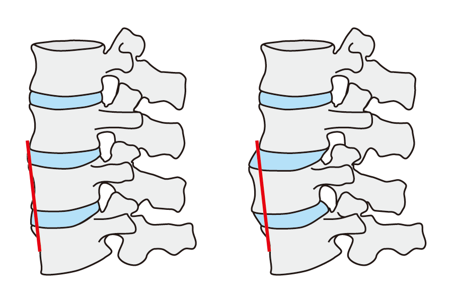

すべり症
すべり症とは
すべり症は、椎間板に異常が発生し、腰椎が本来の位置から前後（多くの場合は前方）にずれてしまった状態を指します。
加齢や閉経後の女性に多い「変性すべり症」と、成長期に激しい運動をしている子供やスポーツ選手に多い「分離すべり症」があります。
「腰椎分離症」が治らないまま分離した状態にしておくと、分離すべり症に移行してしまいます。

症状
足から腰にかけてのしびれや痛み
立ったり歩いたりすると強くなり、座ったり前かがみになると治るしびれや痛み（間欠性跛行）
歩行や立ち上がり、座り込みなどの動作が困難になる
原因
変性すべり症
主に加齢に伴う椎間板の変性や関節の不安定化で起こります。
中高年の女性に多い傾向があります。
分離すべり症
成長期に激しいスポーツ（ジャンプ、ひねり動作）などで腰椎の一部（椎弓）が疲労骨折し、その部分から骨がずれてしまうものです。
診断
痛む部分に原因があるとは限りません。
まずは、レントゲン検査で腰椎のずれを確認します。
早期の発見や他の病気と区別するためには、MRIやCT撮影が有効です。
治療
やまびこグループクリニックでは、保存療法を第一選択としています。
コルセットにより背筋の負担を軽減し、消炎鎮痛剤などにより症状の軽減を図ります。
また、ストレッチや腹筋を中心とした腰まわりの筋力訓練などのリハビリも有効です。
安静時に症状がある重症の場合、また排尿や排便に障害がある場合、そして保存療法で症状が改善せず、患者さんの希望がある場合は手術治療が選択されます。
椎体を固定し、症状を出にくくする固定術が代表的な手術です。